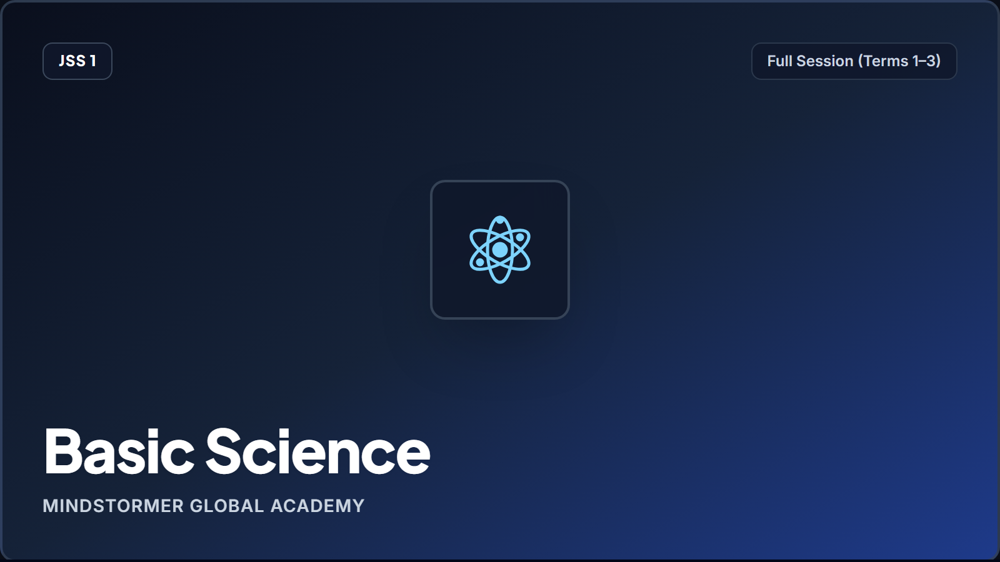
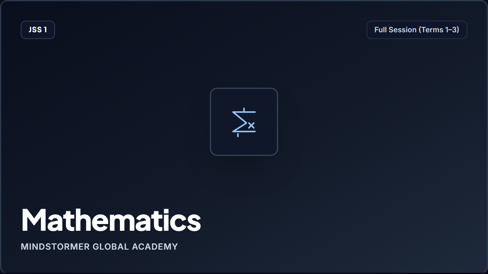
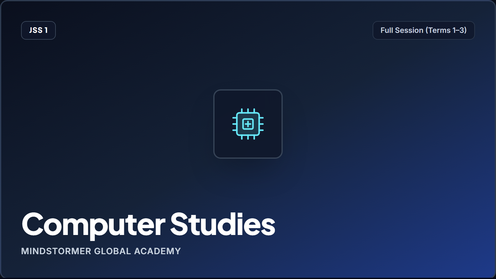

Active Academic Track
Junior Secondary (JSS 1–3)
Welcome back, Alex
Universal Basic Education (UBE) • Core curriculum learning modules and terminal assessment pathway.
Guardian Linkage: Pending Account Verification
Continuous Assessment
88.5%
80% Mastery Gate: Cleared ✓
Fast-Resume • Week 02
Nutrition and Balanced Diet
Basic Science & Technology (Pilot Course 146)
Curriculum Tier
Junior Secondary
Grade 7 (JSS 1) Curriculum
Continuous Assessment (40%)
36.0 / 40
80% Mastery Gate: Cleared ✓
Exam / Practical (60%)
54.0 / 60
Scheduled Term Finals
Attendance Standing
98.4%
Daily Attendance Verified

BST Cluster
Junior Secondary (JSS 1–3)
85% Standing
Integrated Science: Circuit Lab
Quantitative circuit analysis, resistor networks, and Ohm's Law laboratory verification.

CLG Cluster
Intermediate (Primary 4–6)
92% Standing
Advanced Algebraic Expressions
Linear equation models, variable isolation techniques, and coordinate plane proofs.

BST Cluster
Foundational (Primary 1–3)
78% In Progress
Digital Literacy & Algorithmic Logic
Structured procedural logic, computational problem framing, and secure system operations.
Academic Milestones & Assessment Timeline
Universal Basic Education term milestones and pilot assessment pacing
Milestone 1 • Week 01
Completed ✓
Sanitation & Personal Hygiene
Formative evaluation & practical home check verified.
Milestone 2 • Week 02
Active Target
Nutrition & Balanced Diet
Continuous Assessment Quiz (20 Questions) — Active Pilot Module.
Milestone 3 • Midterm
Scheduled
Term Consolidation Assessment
Continuous Assessment Pool (30 Questions) scheduled for Term 01.